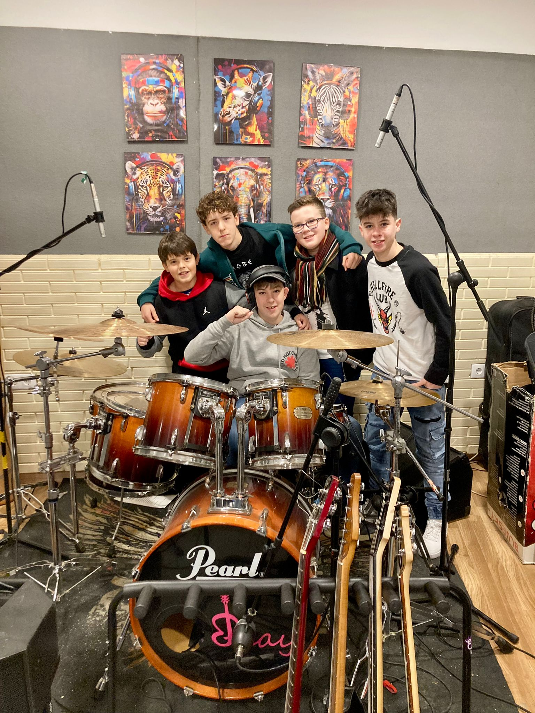
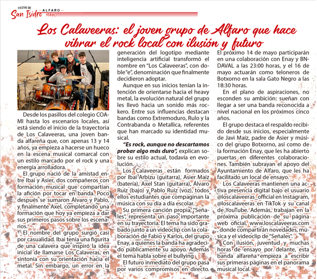

Los Calaveeras: el joven grupo de Alfaro que hace vibrar el rock local con ilusión y futuro.

Desde los pasillos del colegio COAMI hasta los escenarios locales, así está siendo el inicio de la trayectoria de Los Calaveeras, una joven banda alfareña que, con apenas 13 y 14 años, ya empieza a hacerse un hueco en la escena musical comarcal con un estilo marcado por el rock y una energía arrolladora.
El grupo nació de la amistad entre Ibai y Asier, dos compañeros con formación musical que compartían la afición por tocar en banda. Poco después se sumaron Álvaro y Pablo, y finalmente Axel, completando una formación que hoy ya empieza a dar sus primeros pasos sobre los escenarios.
El nombre del grupo surgió casi por casualidad. Ibai tenía una figurita de una calavera que inspiró la idea inicial de llamarse Los Calaveras, en sintonía con su orientación hacia el metal. Sin embargo, un error en la generación del logotipo mediante inteligencia artificial transformó el nombre en “Los Calaveeras”, con doble “e”, denominación que finalmente decidieron adoptar.
Aunque en sus inicios tenían la intención de orientarse hacia el heavy metal, la evolución natural del grupo les llevó hacia un sonido más rockero. Entre sus influencias destacan bandas como Extremoduro, Rulo y la Contrabanda o Metallica, referentes que han marcado su identidad musical.
“Es rock, aunque no descartamos probar algo más duro”, explican sobre su estilo actual, todavía en evolución.
Los Calaveeras están formados por Ibai Arbizu (guitarra), Asier Maíz (batería), Axel Stan (guitarra), Álvaro Ruiz (bajo) y Pablo Ruiz (voz), todos ellos estudiantes que compaginan la música con su día a día escolar.
Su primera canción propia, “Señales”, representa un paso importante en su trayectoria. El tema ha sido grabado junto a un videoclip con la colaboración de Fabio y Karlos, del grupo Enay, a quienes la banda ha agradecido públicamente su apoyo. Además, el tema habla sobre el bullying.
El futuro inmediato del grupo pasa por varios compromisos en directo. El próximo 14 de mayo participarán en una colaboración con Enay y BNDAVAL a las 23:00 horas, y el 16 de mayo actuarán como teloneros de Botxorno en la sala Gato Negro a las 18:30 horas.
En el plano de aspiraciones, no esconden su ambición: sueñan con llegar a ser una banda reconocida a nivel nacional en los próximos cinco años.
El grupo destaca el respaldo recibido desde sus inicios, especialmente de Javi Maíz, padre de Asier y músico del grupo Botxorno, así como de la formación Enay, que les ha abierto puertas en diferentes colaboraciones. También subrayan el apoyo del Ayuntamiento de Alfaro, que les ha facilitado un local de ensayo.
Los Calaveeras mantienen una activa presencia digital bajo el usuario @loscalaveeras_official en Instagram, @loscalaveeras en TikTok y su canal de YouTube. Además, trabajan en la próxima publicación de su página web oficial: www.loscalaveeras.com donde compartirán novedades, música y el videoclip de “Señales”.
Con ilusión, juventud y muchas horas de ensayo por delante, esta banda alfareña empieza a escribir sus primeras páginas en el panorama musical local.
A continuación os dejamos el recorte de la revista!
